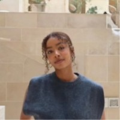

The studio
Hand-built ceramics: pinch, coil and slab. No wheel, so every piece comes out a little uneven, and that’s the point.

SG'">hi, thanks for tapping ↓
Harvard ’27 · Sociology & Data Analytics
I build financial models the way I build pots: by hand, with patience, and so they hold up. Investment & strategy, most recently at JPMorgan.
Hand-built ceramics: pinch, coil and slab. No wheel, so every piece comes out a little uneven, and that’s the point.
Yoga and pilates: strength that’s quiet, and showing up again tomorrow.
I’m a barista at a café. Reading a line of regulars turns out to be good training for reading a room.
Tools I reach for
Sectors I’m curious about